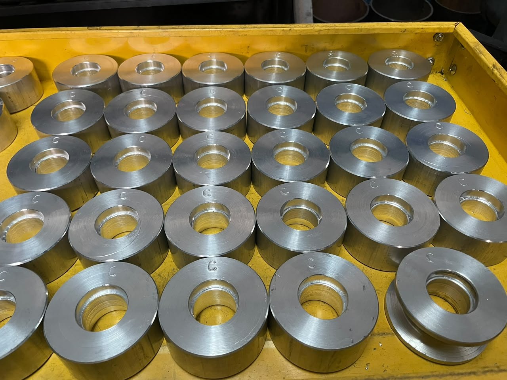
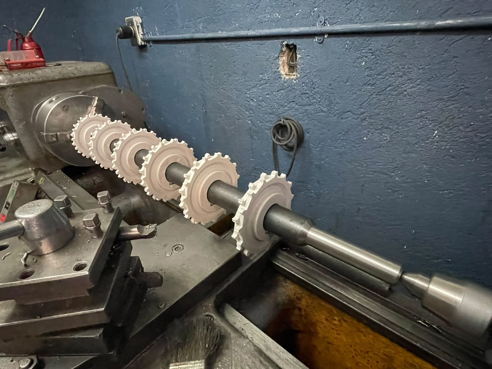

Torneado
Maquinado de piezas cilíndricas, bujes, ejes, separadores, rodillos y componentes especiales.
Soluciones para empresas que necesitan piezas resistentes, precisas y fabricadas bajo muestra, plano o requerimiento técnico.

En MAPROMEC desarrollamos piezas metálicas para maquinaria, procesos industriales y necesidades específicas de producción. Trabajamos con atención al detalle, revisión de medidas y fabricación funcional.
Nuestro objetivo es entregar piezas útiles, durables y listas para integrarse al trabajo diario de cada cliente.
Recreamos piezas tomando como base el componente físico.
Fabricación de acuerdo con medidas y especificaciones técnicas.
Producción de piezas repetitivas para operación o inventario.
Servicios pensados para empresas que requieren piezas funcionales, refacciones especiales o componentes fabricados a la medida.
Maquinado de piezas cilíndricas, bujes, ejes, separadores, rodillos y componentes especiales.
Desarrollo de piezas bajo muestra, plano o necesidad específica del cliente.
Fabricación y ajuste de componentes para maquinaria, sistemas de carga, movimiento o producción.
Maquila de piezas repetitivas para pedidos pequeños, medianos o recurrentes.
Apoyo en reparación, reposición o mejora de piezas desgastadas por uso industrial.
Revisión de requerimientos para definir material, medidas, acabado y funcionalidad.

Analizamos muestra, plano, medidas o necesidad del cliente.
Definimos alcance, cantidad, material y tiempo estimado de entrega.
Realizamos el maquinado y ajuste de acuerdo con el requerimiento.
Se entrega la pieza terminada para instalación, prueba o uso industrial.
Una muestra del tipo de piezas, acabados y componentes fabricados en taller.
Envía una foto, plano, medidas o muestra. MAPROMEC revisa tu requerimiento y prepara una cotización.
Completa los datos y se abrirá WhatsApp con un mensaje listo para enviar.